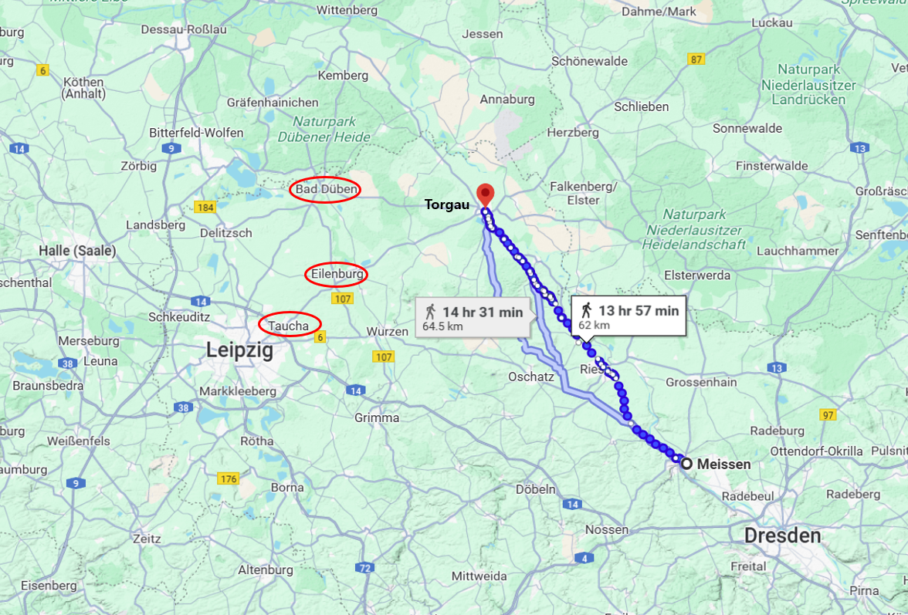
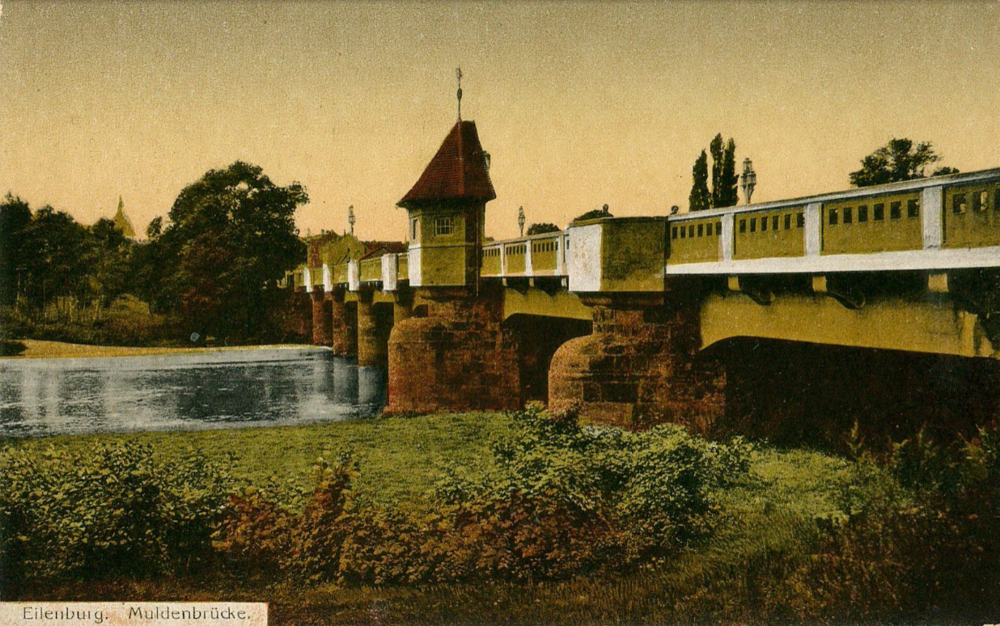
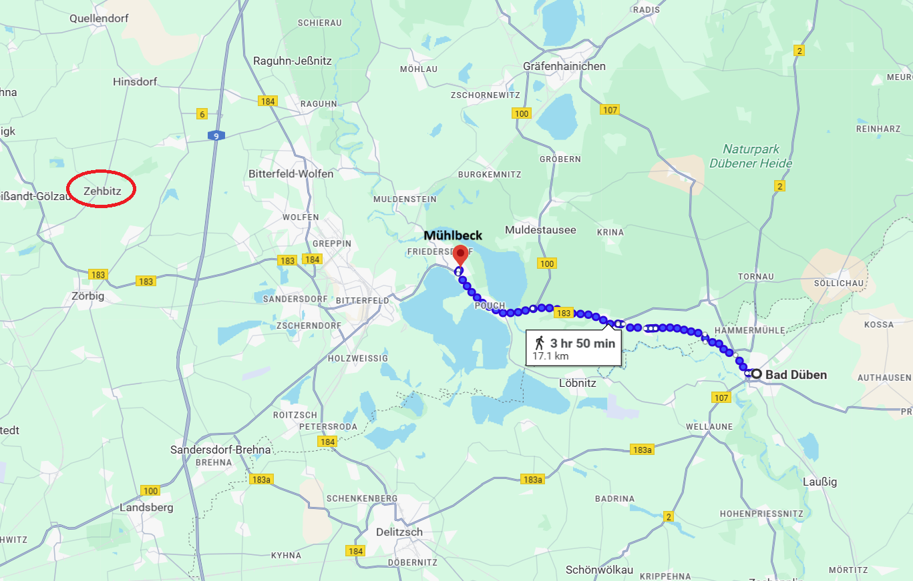

라이프치히로 가는 길 (16) - 얼굴 보고 이야기하자
게시: 2025-02-17T06:30:51+09:00
마르몽의 기대와는 달리, 거기에 쓰인 나폴레옹의 답변은 매우 간단했습니다. "자네의 판단은 중요하지 않네. 적군의 동향에 대한 정보나 보내게." 나름 자신의 나폴레옹의 심복이라고 여기고 있던 마르몽은 나폴레옹의 이런 홀대에 격노했고, 그는 될 대로 되라는 심정으로 네의 명령에 그대로 복종하여 아일렌부르크를 떠나 라이프치히 북동쪽의 타우차(Taucha)로 이동했습니다. 이렇게 이동을 하더라도, 멀더 강변의 아일렌부르크처럼 다리가 있는 곳에는 1개 대대 정도의 병력을 수비대로 남겨두는 것이 보통이었습니다. 그런데, 심통이 난 마르몽은 '뭐 따로 명시적인 명령은 없었으니까'라는 식으로 정말 단 한 명의 병사도 남겨두지 않고 아일렌부르크를 떠나 남쪽 타우차로 향했습니다. 이런 움직임은 이미 그 일대까지 와서 정탐을 하고 있던 러시아군의 코삭 기병대들에게 고스란히 파악되었습니다. 이들은 아일렌부르크를 무혈점령하고는 블뤼허에게 이 사실을 보고 했습니다. 이 보고를 받고 블뤼허는 얼마나 기뻐했을까요? 원래부터 '오로지 돌격 앞으로'의 이미지가 강했던 블뤼허는 당연히 추가 병력을 보내 이 멀더강 도하의 요지를 확실히 장악했을 것입니다. 그의 슐레지엔 방면군이 최종 목적지인 라이프치히로 가려면 멀더강을 건너야 했으니까요. 그러나 의외로 블뤼허는 움직이지 않았습니다. 10월 3일 바르텐부르크 전투 이후 나폴레옹게 '당장 10월 6일까지 10만의 적군이 라이프치히에 도달할 것'이라며 겁에 질린 보고서를 올렸던 네조차도 슐레지엔 방면군이 진격을 멈춘 것을 보고는 '적군은 아마도 라이프치히로 진격하지 않을 것 같다, 대신 기존부터 포위하고 있던 엘베 강변의 요새 비텐베르크부터 함락시키려고 하는 모양'이라고 후속 보고서를 나폴레옹에게 보낼 정도였습니다. 대체 어떻게 된 일이었을까요? 블뤼허가 진격을 멈춘 것에는 3가지 이유가 있었습니다. 일단 그의 참모인 뮈플링이 지나치게 빠른 진격은 위험하다며 적극적으로 만류했습니다. 유사시 퇴각로가 되어줄 바르텐부르크 일대의 진지 공사도 마쳐야 했고, 또 무엇보다 네의 병력들이 어디에 있고 어디로 움직이고 있는지 파악이 안 된 상태에서 무턱대고 라이프치히 방향으로 내달렸다가는 어디서 함정에 빠질지 모르는 일이라는 설득이 주효했습니다. 두 번째로는 베르나도트의 북부 방면군이 함께 움직여 주어야 라이프치히로 가는 의미가 있는데, 베르나도트가 과연 자신과 함께 움직여줄지 확인이 되지 않았습니다. 세째, 네의 병력들의 움직임을 파악하라고 코삭들과 경기병대를 풀어놓았더니 온갖 이해할 수 없는 보고들이 날아들었기 때문이었습니다. 보고에 따르면 네의 부대들은 우르르 멀더강 좌안에서 우안으로, 그러니까 동쪽으로 황급히 이동하고 있었습니다. 그런데 일부 부대들은 라이프치히로, 그러니까 남쪽으로 이동한다고 했습니다. 이건 블뤼허와 그나이제나우를 어리둥절하게 만들었습니다. 베르나도트와 블뤼허가 일제히 엘베강을 건넌 것은 라이프치히에서 보헤미아 방면군과 합류하여 위함이었고, 그걸 모를 리 없는 그랑다르메가 라이프치히가 아니라 오히려 멀더강 건너편인 동쪽으로 이동한다는 것이 이상했던 것입니다. 특히나 이해할 수 없었던 것은 엘베 강변을 따라 드레스덴 인근 마이센(Meissen)에서 토르가우로, 즉 북서쪽으로 이동하는 군단급 병력의 움직임에 대한 보고가 날아들었습니다. 결국 그랑다르메는 라이프치히가 아니라 토르가우 방면으로 집결 중이라는 이야기인데, 이게 뭘 의미하는지가 불분명했습니다. 그런 상황에서 멀더강 도하를 위한 요지인 아일렌부르크를 지키던 그랑다르메의 군단급 병력이 갑자기 아일렌부르크를 내버리고 라이프치히 방면으로 이동했다? 이건 또 뭐지? 하는 의심이 들 수 밖에 없었습니다. 그렇게 슐레지엔 방면군 수뇌부가 어리둥절하는 사이, 불과 하루만에 상황이 더욱 이상하게 전개되었습니다. 선뜻 아일렌부르크로 진격을 못하고 머뭇거리는 사이에, 다시 그랑다르메 병력 약 1천 명 정도가 아일렌부르크로 우르르 달려와 코삭들을 쫓아낸 것입니다.

(마이센에서 병력이 왔다는 것은 사실상 드레스덴, 그러니까 나폴레옹의 지시를 받고 병력이 움직였다는 뜻입니다. 본문에 언급된 아일렌부르크, 타우차 등의 위치를 붉은 원으로 표시했습니다.)

(이 그림에 그려진 아일렌부르크의 이 멀더교(Muldebrücke, 글자 그대로 멀더강 다리라는 뜻)는 1813년 당시에는 없던 것입니다. 이 그림은 1913년에 그려진 것이네요.) 다른 것들은 몰라도, 아일렌부르크의 재점령 소동은 사실 별 일은 아니었습니다. 마르몽이 아일렌부르크를 글자 그대로 완전히 버려두고 가버렸다는 것을 뒤늦게 알게 된 네가 레이니에의 제7군단 병력 일부를 파견하여 재점령하게 했던 것입니다. 하지만 블뤼허의 발목을 묶고 있던 다른 문제들은 꽤 중대한 것이었습니다. 특히나 베르나도트의 소극성을 잘 알고 있던 블뤼허로서는 베르나도트와의 협동 작전을 분명히 할 필요가 있었습니다. 사실 블뤼허도 베르나도트의 진정성을 믿지 못하고 있었으므로, 엘베 강변을 따라 군단급 그랑다르메 병력이 마이센에서 토르가우 쪽으로 이동 중이라는 정보는 일부러 베르나도트에게 전달하지 않았을 정도로 상호 불신이 심했습니다. 블뤼허는 그런 소식을 전해주면 베르나도트가 겁을 먹고 엘베강을 다시 건너가 돌아가버릴까 우려했던 것입니다. 게다가 서로 하루 행군거리 정도, 그러니까 30km 떨어진 거리에서 전화도 아니고 편지를 주고 받으며 작전 협의를 하는 것은 분명히 제약 사항이 많았습니다. 원래 인간의 의사소통에 있어 문장 자체는 7%의 비중을 차지할 뿐이고, 38%는 어투와 억양으로, 55%는 손짓이나 표정 등의 바디 랭귀지로 이루어진다고 하지요. 종이에 쓰여진 문자만으로는 상대의 진심을 7% 밖에 모른다는 것도 그랬지만, 무엇보다 시간이 너무 오래 걸렸습니다. 이건 단순히 전령이 말을 달려 편지를 배달하는데 시간이 오래 걸렸다는 뜻만은 아니었습니다. 가령 위에서 언급한, 사방에서 접수된 각종 정보 보고서들을 베르나도트에게도 보내줘야 했는데, 내용도 길고 복잡한 것을 전령에게 외워서 전달하게 할 수가 없었으므로 그 보고서들의 사본을 일일이 깃털펜으로 필사하여 보내야 했는데, 몇 명 안 되는 서기들이 불편한 야전용 탁자에서 그런 편지들을 베껴 쓰는데만도 시간이 꽤 걸렸습니다. 펜이 총칼보다 더 강하다는 말이 어쩌면 이 시대에 나온 것일 수도 있을 정도로, 빠르고 효율적인 문서 작성도 당시 군대의 작전에 매우 필수적이었던 것입니다.
(바디랭귀지의 중요성을 보여주는 가장 단적인 예는 사귀는 남녀간에 뭔가 다툼이 생겼을 때입니다. 그럴 때는 얼굴 보고 이야기 해야지 문자로 이야기하다가는 파토나기 딱 좋습니다.) 이렇게 거리가 불과 30km 정도 밖에 안 떨어져 있다면 사실 마차나 말을 타고 양쪽에서 달리면 몇 시간만에 두 사령관이 직접 대면할 수 있었습니다. 이쯤 되면 블뤼허가 답답해서라도 베르나도트에게 '얼굴 보고 이야기하자'라는 소리를 할 만도 했는데, 블뤼허는 프랑스인 베르나도트를 직접 만나기가 싫었는지 그런 제안을 하지 않고 있었습니다. 오히려, 똑같이 의사소통의 답답함을 느꼈던 베르나도트가 양군의 중간 지점인 뮐벡(Mühlbeck)에서 10월 7일 만나자고 먼저 제의를 했습니다. 작전의 지지부진함에 몸이 달았던 것은 블뤼허였으므로 그는 그 초대를 받아들였습니다. 문제는 블뤼허가 프랑스어를 할 줄 모른다는 점이었습니다. 이건 당시 유럽 귀족으로서는 꽤 드문 일이었습니다. 아무튼 통역이 필요했는데, 그나이제나우는 블뤼허보다 더 베르나도트를 혐오했으므로 사령부를 비울 수 없다는 핑계로 그 회담에 동행하는 것을 거부했고, 대신 뮈플링에게 통역 임무를 떠넘겼습니다. 그리고 드디어 10월 7일 저녁, 프랑스의 적이 된 프랑스인 베르나도트와 프랑스인이라면 자기 부하인 랑쥬롱마저도 미워하던 블뤼허가 얼굴을 맞대게 되었습니다. 과연 이 두 사람의 만남은 어떤 분위기를 연출했을까요?

(당시 블뤼허의 사령부가 있던 곳은 바트 뒤벤이었는데, 거기서 뮐벡까지는 약 17km의 거리입니다. 아무리 경기병 출신이라지만 당시 71세였던 블뤼허가 수시간 동안 17km의 거리를 말로 달릴 수 있었을까요? 기록에 따르면 블뤼허는 뮈플링과 함께 마차를 타고 이동했다고 합니다. 베르나도트의 사령부는 당시 저 왼쪽 체비츠(Zehbitz)에 있었습니다. 정말 대충 중간지점입니다.) Source : The Life of Napoleon Bonaparte, by William Milligan Sloane Napoleon and the Struggle for Germany, by Leggiere, Michael V With Napoleon's Guns by Colonel Jean-Nicolas-Auguste Noël https://www.britannica.com/event/Napoleonic-Wars/Dispositions-for-the-autumn-campaign https://www.napoleon.org/en/history-of-the-two-empires/timelines/1813-and-the-lead-up-to-the-battle-of-leipzig/ http://www.historyofwar.org/articles/campaign_leipzig.html https://kapable.club/blog/communication-skills/body-language-communication-skills/ https://sachsen.museum-digital.de/singleimage?imagenr=119975